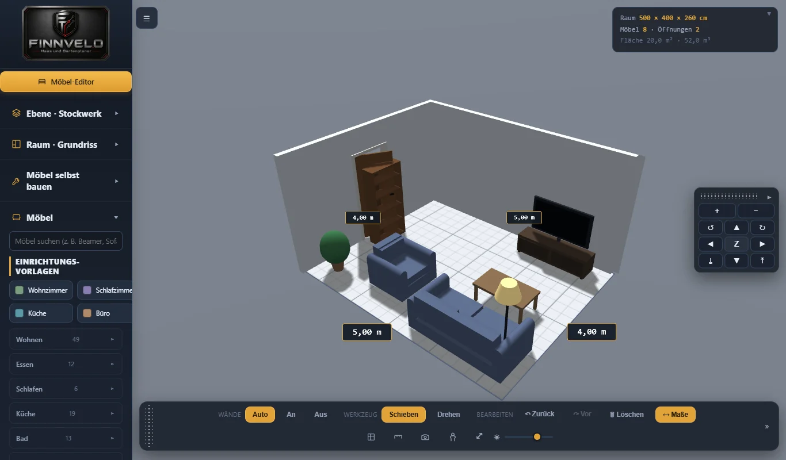
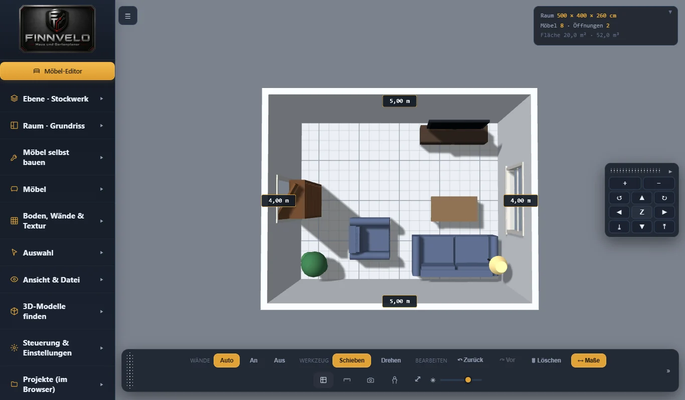
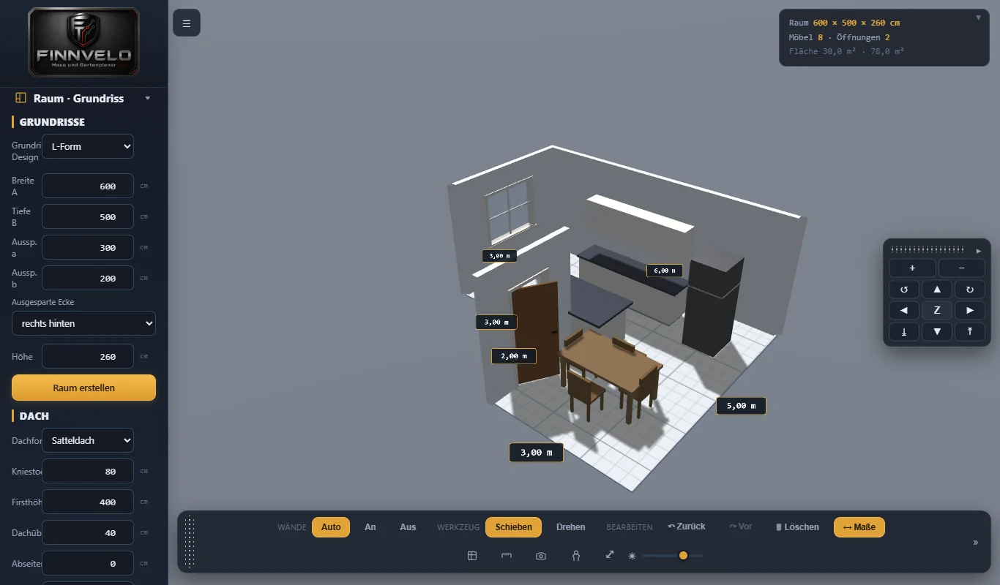
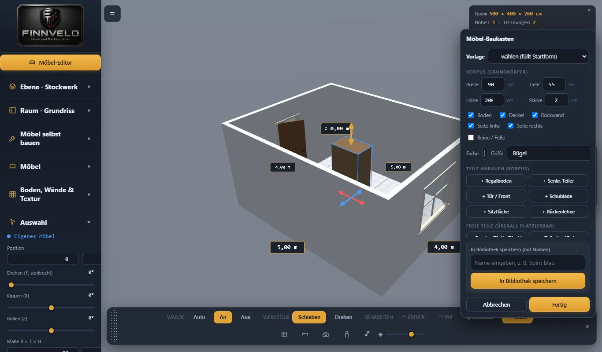
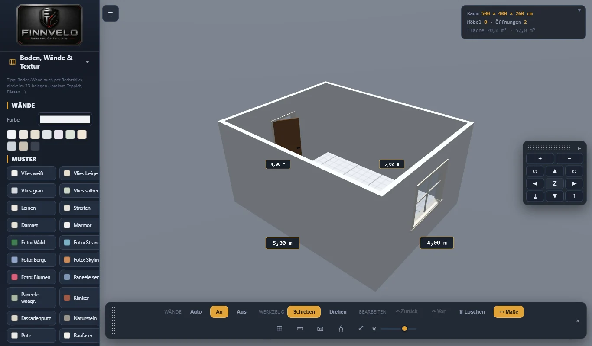
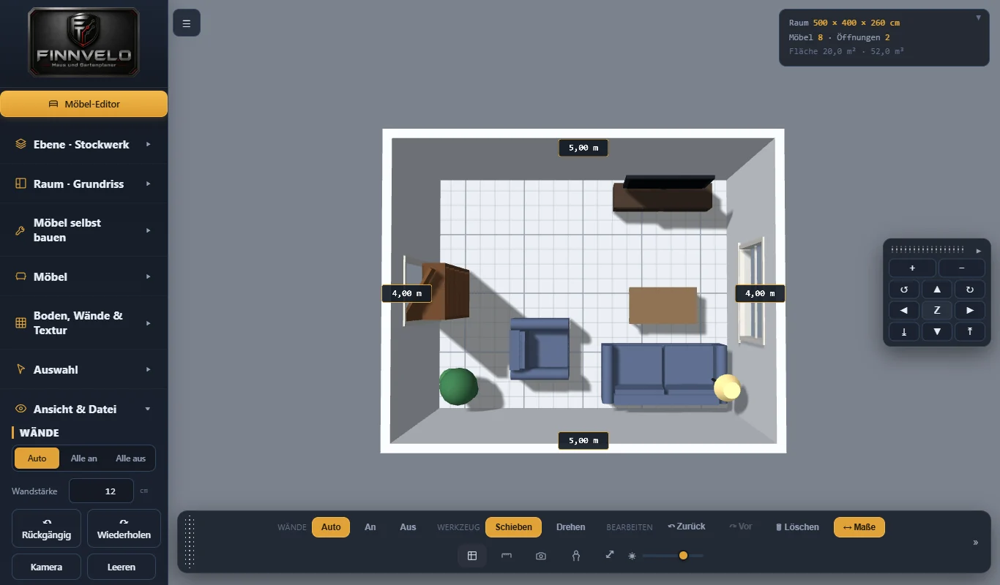
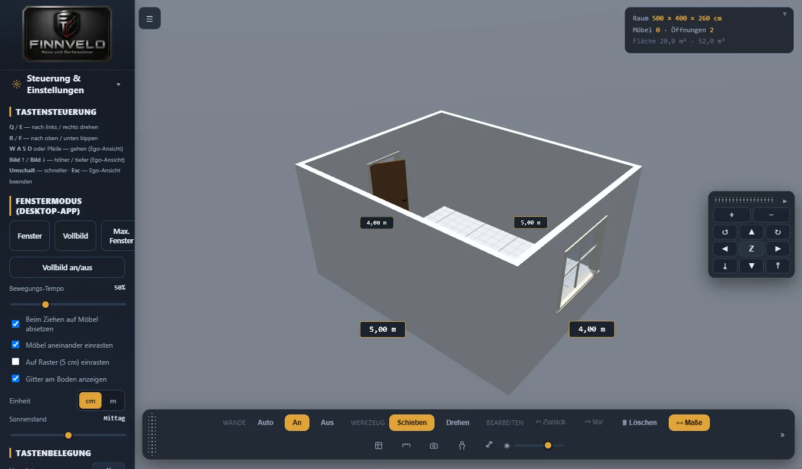
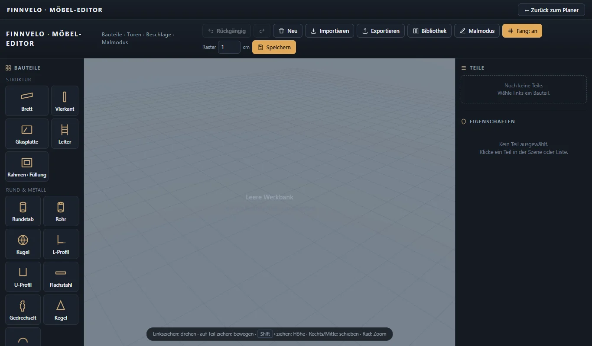

Räume · Möbel · Dach · Garten
Finnvelo Haus und Gartenplaner
Browser · WindowsDer Finnvelo Haus- und Gartenplaner ist ein 3D-Planer für Häuser, Wohnungen und Gärten. Grundrisse werden mit echten Maßen gezeichnet, Etagen und Dach aufgebaut, Möbel aus einem Baukasten zusammengestellt und der Außenbereich gestaltet – anschließend lässt sich das Ergebnis in der Ego-Ansicht durchlaufen. Der Planer läuft als einzelne Datei im Browser, ohne Installation und ohne Internetverbindung.
Beschreibung
Geplant wird Etage für Etage – vom Keller über bis zu fünf Obergeschosse bis ins Dachgeschoss. Grundrisse entstehen als Rechteck, Quadrat, L- oder U-Form, frei gezeichnet oder über Eckpunkte, mit Innenwänden, Türen und Fenstern; der Grundriss einer Etage lässt sich auf alle anderen übertragen. Das Dach lässt sich als Sattel-, Walm-, Pult-, Zelt- oder Flachdach anlegen, mit Kniestock, Dachfenstern und sieben Ziegelformen.
Wände und Fassaden werden mit Pinsel, Kacheln und Mustern gestaltet, 31 Fassadentexturen inklusive. Wer es genau wissen will, blendet die Dachkonstruktion mit Sparren und Pfetten ein und erhält eine Stückliste. Jede Änderung wird automatisch gesichert; ein eigenständiges Windows-Programm ist in Arbeit.
Eingerichtet wird aus einer Bibliothek mit 127 Einträgen: Wohnen, Essen, Schlafen, Küche, Bad, Büro, Technik und Deko, dazu Personen als Maßstab, Treppen, Einbauten, Elektro und Garten. Für den schnellen Start gibt es Einrichtungsvorlagen für Wohnzimmer, Schlafzimmer, Küche und Büro. Jedes Möbel lässt sich verschieben, drehen, kippen, in der Größe ändern, spiegeln, duplizieren und einfärben; mehrere Stücke lassen sich gruppieren.
Eigene Möbel entstehen im Baukasten aus Korpus, Böden, Teilern, Türen, Schubladen, Sitzflächen und Lehnen, im Zeichenmodus aus Grundriss und Höhe oder im eigenen Möbel-Editor. Fertige 3D-Modelle im Format .glb lassen sich laden; eine Linkliste führt zu großen Sammlungen freier Modelle. Für Küche und Elektro gibt es einen Einbau-Planer und Mehrfachrahmen aus Steckdosen und Schaltern.
Angesehen wird der Plan in 3D von allen Seiten, in der Draufsicht als 2D-Grundriss mit Maßen oder in der Ego-Ansicht, in der du mit Maus und Tastatur durch die Räume gehst. Lampen leuchten auf Wunsch, der Sonnenstand ist einstellbar, und jede Ansicht lässt sich als Bild speichern. Die Möbelliste gibt es als CSV-Datei.
Grundriss mit echten Maßen
Räume und Innenwände zeichnen, Türen und Fenster setzen – Etage für Etage, vom Keller bis zum Dach.
Dach und Dachkonstruktion
Fünf Dachformen, Kniestock und Dachfenster – auf Wunsch mit Sparren, Pfetten und Stückliste.
Möbel-Baukasten
127 Einträge in der Bibliothek, Möbel in ihre Teile zerlegbar und in Größe und Aufbau anpassbar.
Farben und Materialien
Jedes Möbelteil einzeln einfärben, Wände bemalen oder fliesen – mit Pipette, Lineal und Raster.
Garten gestalten
Zaun und Gartentor, Wegplatten, Bäume, Hecken, Hochbeet, Kräuter, Gartenhaus und Gartenbank rund ums Haus im selben Planer anlegen.
Ego-Ansicht
Durch die geplanten Räume laufen wie in einem Spiel – gesteuert mit Maus und Tastatur.
Eigene Möbel entwerfen
Im Möbel-Editor eigene Stücke bauen und für weitere Projekte speichern.
Automatisch gesichert
Jede Änderung wird gespeichert; benannte Projekte lassen sich jederzeit wieder öffnen.
Einrichtungsvorlagen
Wohnzimmer, Schlafzimmer, Küche oder Büro mit einem Klick einrichten – und dann anpassen.
Draufsicht mit Maßen
Der Plan als 2D-Grundriss, Maße ein- und ausblendbar, Wände automatisch durchsichtig.
Eigene 3D-Modelle
Fertige Modelle im Format .glb laden; Links zu freien Sammlungen sind eingebaut.
Als Bild und Liste
Ansichten als PNG speichern, die Möbelliste als CSV-Datei ausgeben.
Oberfläche
Die folgenden Ansichten zeigen den Planer mit Beispielräumen aus den eingebauten Vorlagen. Ein Klick auf ein Bild öffnet es groß.
Planen und Einrichten




Gestalten und Einstellen




Einstellungen – das kannst du anpassen
Der Planer ist in Bereiche gegliedert, die sich in der linken Leiste aufklappen. Ein Überblick über alles, was sich einstellen lässt:
Ebene und Grundriss
- Haus anlegenKeller, ein bis sechs Geschosse und Dachgeschoss wählen und übernehmen.
- Aktive EbeneDie Ebene darunter blass einblenden, alle Ebenen zeigen oder das Haus aufschneiden.
- Grundriss-DesignRechteck, Quadrat, L-Form, U-Form, frei zeichnen oder Eckpunkte – mit Breite, Tiefe und Höhe.
- KellerWie weit er aus der Erde ragt; Lichtschächte kommen automatisch.
Dach
- DachformSatteldach, Walmdach, Pultdach, Zeltdach oder Flachdach.
- MaßeKniestock, Firsthöhe, Dachüberstand, Abseitenwand und Zwischendecke.
- DachkonstruktionSparrenabstand, -breite und -höhe, Pfetten, verschiebbare Sparren und Stückliste.
- Ziegel und FensterSieben Ziegelformen, Dachfarbe und Dachfenster an beliebiger Stelle.
Boden, Wände und Textur
- WändeFarbe, Muster, Tapete aus eigenem Bild oder Foto – auf einer Wand oder allen.
- BodenFarbe, Muster in vier Richtungen oder eigenes Bild.
- MalenPinsel, Kachel, Rechteck, Dreieck, Streifen, Radierer und Pipette, mit Raster und Lineal, dazu Muster wie Rand, Schachbrett oder Sockel.
- DeckeAnzeigen, einfärben oder mit Textur belegen.
Möbel und Auswahl
- Position und LageDrehen, kippen und rollen in Grad, Höhe über dem Boden.
- MaßeBreite, Tiefe und Höhe; bei verstellbaren Möbeln auch Sitzhöhe und Lehnen.
- AussehenFarbe, Bild oder Materialtextur – je Möbel oder Teil.
- Türen und FensterPosition ab Ecke, Breite, Höhe, Brüstung, Türart und Anschlag.
Ansicht und Datei
- WändeAutomatisch, alle an oder alle aus, Wandstärke in Zentimetern.
- AnsichtMaße im Grundriss, Decke, Lampen leuchten, Ego-Ansicht.
- Dachschräge und TreppenlochFür das Dachgeschoss und Durchbrüche zwischen den Etagen.
- DateiSpeichern mit Ort, Projekt laden, Möbelliste als CSV, Ansicht als PNG.
Steuerung und Projekte
- TastenbelegungBewegen, drehen, zoomen, löschen – jede Taste neu belegbar.
- Fenstermodus und TempoFenster, Vollbild oder maximiert; Bewegungstempo in Prozent.
- EinrastenAuf Möbel absetzen, Möbel aneinander und am 5-cm-Raster einrasten, Gitter am Boden.
- Einheit und SonnenstandZentimeter oder Meter, Sonne von Morgen bis Abend.
- ProjekteSpeichern, laden, löschen, Standard-Speicherort für Export und Import.
Tutorial-Video
Ein Tutorial-Video zum Haus und Gartenplaner wird hier ergänzt, sobald es bereitsteht.
Besondere Vorteile
- Läuft im Browser – ohne Installation und ohne Internet
- Grundrisse und Etagen mit echten Maßen
- Fünf Dachformen samt Dachkonstruktion und Stückliste
- 127 Bibliothekseinträge und ein eigener Möbel-Editor
- Jedes Möbelteil einzeln färbbar
- Garten- und Außenflächenplanung
- Ego-Ansicht zum Durchlaufen der Räume
- Einrichtungsvorlagen für den schnellen Start
- Eigene 3D-Modelle im Format .glb
- Kein Konto und keine Anmeldung
Zielgruppe
Der Haus- und Gartenplaner eignet sich für alle, die vor einem Hausbau, einem Umzug, einer Renovierung oder einer Neugestaltung erst einmal in Ruhe planen möchten – vom einzelnen Zimmer über das ganze Haus bis zum Garten.
Besonders hilfreich ist der Planer, um Möbelmaße vorab zu prüfen, Raumaufteilungen auszuprobieren und Ideen für Einrichtung und Garten sichtbar zu machen, bevor etwas gekauft oder gebaut wird.
- Wer vor dem Umzug wissen will, ob Sofa und Schrank in die neue Wohnung passen.
- Bauherren, die Etagen und Dach durchspielen und eine erste Stückliste fürs Dach brauchen.
- Heimwerker, die Möbel selbst bauen und vorher Maße und Aufbau festlegen.
Daten und Datenschutz
Der Planer ist eine einzelne HTML-Datei, alle Bibliotheken stecken darin. Er läuft ohne Installation, ohne Konto und ohne Internetverbindung. Projekte und die automatische Sicherung legt er im Speicher deines Browsers ab; zum Sichern oder Umziehen speicherst du ein Projekt als Datei an einem Ort deiner Wahl.
Ins Netz geht der Planer nicht von sich aus. Nur die Links unter „3D-Modelle finden“ öffnen fremde Seiten mit freien Modellen – und das erst, wenn du sie anklickst.
Download (Android-App)
Windows-Version
Der Haus und Gartenplaner ist zusätzlich als eigenständiges Windows-Programm geplant. Sobald die erste Installationsdatei bereitsteht, wird sie hier verlinkt.
Zum Download-BereichWeitere Versionen und Patches
Hier können später weitere Versionen, Patchdateien und ältere Installationsdateien ergänzt werden.
Download (PC-Version)
Planer herunterladen
Der Planer ist eine einzelne HTML-Datei: herunterladen und in einem aktuellen Browser öffnen. Er läuft ohne Installation und ohne Internetverbindung. Ein eigenständiges Windows-Programm ist in Arbeit.
Planer herunterladen (HTML-Datei)Hinweis
Alle Bibliotheken sind in die Datei eingebettet. Deshalb ist sie etwas größer – und funktioniert dafür vollständig ohne Internetverbindung.